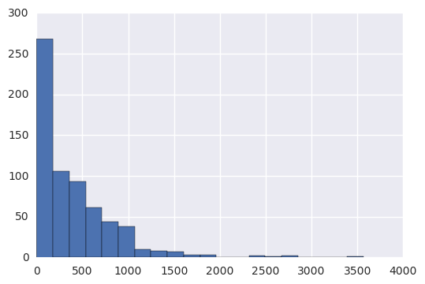
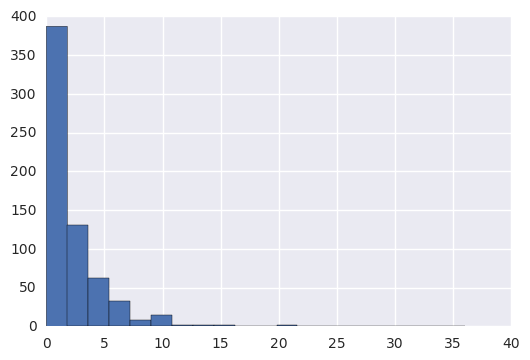
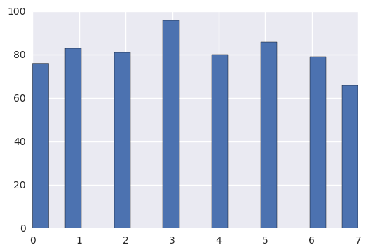
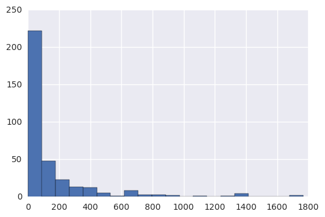
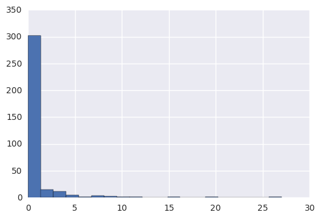

Load Data from CSVs
import pandas as pd
daily_engagement=pd.read_csv('daily_engagement_full.csv')
len(daily_engagement['acct'].unique())
1237
import unicodecsv
## Longer version of code (replaced with shorter, equivalent version below)
# enrollments = []
# f = open('enrollments.csv', 'rb')
# reader = unicodecsv.DictReader(f)
# for row in reader:
# enrollments.append(row)
# f.close()
def save_file(data):
with open(data, 'rb') as f:
reader = unicodecsv.DictReader(f)
return list(reader)
#####################################
# 1 #
#####################################
## Read in the data from daily_engagement.csv and project_submissions.csv
## and store the results in the below variables.
## Then look at the first row of each table.
enrollments = save_file('enrollments.csv')
daily_engagement = save_file('daily_engagement.csv')
project_submissions = save_file('project_submissions.csv')
print daily_engagement[0]
{u'lessons_completed': u'0.0', u'num_courses_visited': u'1.0', u'total_minutes_visited': u'11.6793745', u'projects_completed': u'0.0', u'acct': u'0', u'utc_date': u'2015-01-09'}
Fixing Data Types
from datetime import datetime as dt
# Takes a date as a string, and returns a Python datetime object.
# If there is no date given, returns None
def parse_date(date):
if date == '':
return None
else:
return dt.strptime(date, '%Y-%m-%d')
# Takes a string which is either an empty string or represents an integer,
# and returns an int or None.
def parse_maybe_int(i):
if i == '':
return None
else:
return int(i)
# Clean up the data types in the enrollments table
for enrollment in enrollments:
enrollment['cancel_date'] = parse_date(enrollment['cancel_date'])
enrollment['days_to_cancel'] = parse_maybe_int(enrollment['days_to_cancel'])
enrollment['is_canceled'] = enrollment['is_canceled'] == 'True'
enrollment['is_udacity'] = enrollment['is_udacity'] == 'True'
enrollment['join_date'] = parse_date(enrollment['join_date'])
enrollments[0]
{u'account_key': u'448',
u'cancel_date': datetime.datetime(2015, 1, 14, 0, 0),
u'days_to_cancel': 65,
u'is_canceled': True,
u'is_udacity': True,
u'join_date': datetime.datetime(2014, 11, 10, 0, 0),
u'status': u'canceled'}
# Clean up the data types in the engagement table
for engagement_record in daily_engagement:
engagement_record['lessons_completed'] = int(float(engagement_record['lessons_completed']))
engagement_record['num_courses_visited'] = int(float(engagement_record['num_courses_visited']))
engagement_record['projects_completed'] = int(float(engagement_record['projects_completed']))
engagement_record['total_minutes_visited'] = float(engagement_record['total_minutes_visited'])
engagement_record['utc_date'] = parse_date(engagement_record['utc_date'])
daily_engagement[0]
{u'acct': u'0',
u'lessons_completed': 0,
u'num_courses_visited': 1,
u'projects_completed': 0,
u'total_minutes_visited': 11.6793745,
u'utc_date': datetime.datetime(2015, 1, 9, 0, 0)}
# Clean up the data types in the submissions table
for submission in project_submissions:
submission['completion_date'] = parse_date(submission['completion_date'])
submission['creation_date'] = parse_date(submission['creation_date'])
project_submissions[0]
{u'account_key': u'256',
u'assigned_rating': u'UNGRADED',
u'completion_date': datetime.datetime(2015, 1, 16, 0, 0),
u'creation_date': datetime.datetime(2015, 1, 14, 0, 0),
u'lesson_key': u'3176718735',
u'processing_state': u'EVALUATED'}
Note when running the above cells that we are actively changing the contents of our data variables. If you try to run these cells multiple times in the same session, an error will occur.
Investigating the Data
#####################################
# 2 #
#####################################
## Find the total number of rows and the number of unique students (account keys)
## in each table.
unique_enrolled_students=set()
for enrollment in enrollments:
if enrollment['account_key'] not in unique_enrolled_students:
unique_enrolled_students.add(enrollment['account_key'])
print len(unique_enrolled_students)
print len(enrollments)
unique_engaged_students=set()
for enrollment in daily_engagement:
if enrollment['acct'] not in unique_engaged_students:
unique_engaged_students.add(enrollment['acct'])
print len(unique_engaged_students)
print len(daily_engagement)
# project_students=set()
# for project_submissions['account_key'] not in project_students:
# project_students[]=project_submissions['account_key']
# len(project_students)
# len(project_submissions)
1302
1640
1237
136240
Problems in the Data
#####################################
# 3 #
#####################################
# Rename the "acct" column in the daily_engagement table to "account_key".
for engagements in daily_engagement:
engagements['account_key']=engagements['acct']
del[engagements['acct']]
daily_engagement[0]['account_key']
u'0'
Missing Engagement Records
#####################################
# 4 #
#####################################
## Find any one student enrollments where the student is missing from the daily engagement table.
## Output that enrollment.
for enrollment in enrollments:
if enrollment['account_key'] not in unique_engaged_students:
print enrollment
break
{u'status': u'canceled', u'is_udacity': False, u'is_canceled': True, u'join_date': datetime.datetime(2014, 11, 12, 0, 0), u'account_key': u'1219', u'cancel_date': datetime.datetime(2014, 11, 12, 0, 0), u'days_to_cancel': 0}
Checking for More Problem Records
#####################################
# 5 #
#####################################
## Find the number of surprising data points (enrollments missing from
## the engagement table) that remain, if any.
for enrollment in enrollments:
if (enrollment['account_key'] not in unique_engaged_students) and (enrollment['join_date']!=enrollment['cancel_date']) :
print enrollment
{u'status': u'canceled', u'is_udacity': True, u'is_canceled': True, u'join_date': datetime.datetime(2015, 1, 10, 0, 0), u'account_key': u'1304', u'cancel_date': datetime.datetime(2015, 3, 10, 0, 0), u'days_to_cancel': 59}
{u'status': u'canceled', u'is_udacity': True, u'is_canceled': True, u'join_date': datetime.datetime(2015, 3, 10, 0, 0), u'account_key': u'1304', u'cancel_date': datetime.datetime(2015, 6, 17, 0, 0), u'days_to_cancel': 99}
{u'status': u'current', u'is_udacity': True, u'is_canceled': False, u'join_date': datetime.datetime(2015, 2, 25, 0, 0), u'account_key': u'1101', u'cancel_date': None, u'days_to_cancel': None}
Tracking Down the Remaining Problems
# Create a set of the account keys for all Udacity test accounts
udacity_test_accounts = set()
for enrollment in enrollments:
if enrollment['is_udacity']:
udacity_test_accounts.add(enrollment['account_key'])
len(udacity_test_accounts)
6
# Given some data with an account_key field, removes any records corresponding to Udacity test accounts
def remove_udacity_accounts(data):
non_udacity_data = []
for data_point in data:
if data_point['account_key'] not in udacity_test_accounts:
non_udacity_data.append(data_point)
return non_udacity_data
# Remove Udacity test accounts from all three tables
non_udacity_enrollments = remove_udacity_accounts(enrollments)
non_udacity_engagement = remove_udacity_accounts(daily_engagement)
non_udacity_submissions = remove_udacity_accounts(project_submissions)
print len(non_udacity_enrollments)
print len(non_udacity_engagement)
print len(non_udacity_submissions)
1622
135656
3634
Refining the Question
#####################################
# 6 #
#####################################
## Create a dictionary named paid_students containing all students who either
## haven't canceled yet or who remained enrolled for more than 7 days. The keys
## should be account keys, and the values should be the date the student enrolled.
paid_students = {}
for enrollment in non_udacity_enrollments:
if (not enrollment['is_canceled']) or( enrollment['days_to_cancel']>7):
if (enrollment['join_date'] not in paid_students) or (enrollment['join_date']>paid_student[enrollment['account_key']]):
paid_students[enrollment['account_key']]=(enrollment['join_date'])
len(paid_students)
995
Getting Data from First Week
# Takes a student's join date and the date of a specific engagement record,
# and returns True if that engagement record happened within one week
# of the student joining.
def within_one_week(join_date, engagement_date):
time_delta = engagement_date - join_date
return time_delta.days < 7
#####################################
# 7 #
#####################################
## Create a list of rows from the engagement table including only rows where
## the student is one of the paid students you just found, and the date is within
## one week of the student's join date.
# paid_engagement_in_first_week = []
# for engagement in non_udacity_engagement:
# if ( engagement['account_key'] in paid_students) and within_one_week(paid_students[engagement['account_key']],engagement['utc_date']):
# paid_engagement_in_first_week.append(engagement)
# len(paid_engagement_in_first_week)
def within_one_week(join_date, engagement_date):
time_delta = engagement_date - join_date
return (time_delta.days < 7 and time_delta.days>=0)
def remove_free_trial_cancels(data):
new_data = []
for data_point in data:
if data_point['account_key'] in paid_students:
new_data.append(data_point)
return new_data
paid_enrollments = remove_free_trial_cancels(non_udacity_enrollments)
paid_engagement = remove_free_trial_cancels(non_udacity_engagement)
paid_submissions = remove_free_trial_cancels(non_udacity_submissions)
print len(paid_enrollments)
print len(paid_engagement)
print len(paid_submissions)
paid_engagement_in_first_week = []
for engagement_record in paid_engagement:
account_key = engagement_record['account_key']
join_date = paid_students[account_key]
engagement_record_date = engagement_record['utc_date']
if within_one_week(join_date, engagement_record_date):
paid_engagement_in_first_week.append(engagement_record)
len(paid_engagement_in_first_week)
1293
134549
3618
6920
Exploring Student Engagement
from collections import defaultdict
# Create a dictionary of engagement grouped by student.
# The keys are account keys, and the values are lists of engagement records.
engagement_by_account = defaultdict(list)
for engagement_record in paid_engagement_in_first_week:
account_key = engagement_record['account_key']
engagement_by_account[account_key].append(engagement_record)
#engagement_by_account['426']
# Create a dictionary with the total minutes each student spent in the classroom during the first week.
# The keys are account keys, and the values are numbers (total minutes)
total_minutes_by_account = {}
days={}
for account_key, engagement_for_student in engagement_by_account.items():
total_minutes = 0
number=0
for engagement_record in engagement_for_student:
total_minutes += engagement_record['total_minutes_visited']
#number+=1
#days[account_key]=number
total_minutes_by_account[account_key] = total_minutes
#print days
import numpy as np
# Summarize the data about minutes spent in the classroom
total_minutes = total_minutes_by_account.values()
print 'Mean:', np.mean(total_minutes)
print 'Standard deviation:', np.std(total_minutes)
print 'Minimum:', np.min(total_minutes)
print 'Maximum:', np.max(total_minutes)
Mean: 305.414718908
Standard deviation: 405.91261032
Minimum: 0.0
Maximum: 3564.7332645
Debugging Data Analysis Code
#####################################
# 8 #
#####################################
## Go through a similar process as before to see if there is a problem.
## Locate at least one surprising piece of data, output it, and take a look at it.
Lessons Completed in First Week
#####################################
# 9 #
#####################################
## Adapt the code above to find the mean, standard deviation, minimum, and maximum for
## the number of lessons completed by each student during the first week. Try creating
## one or more functions to re-use the code above.
# def first_week(data):
# detail_by_account = {}
# for account_key, engagement_for_student in engagement_by_account.items():
# detail = 0
# number=0
# for engagement_record in engagement_for_student:
# detail += engagement_record[data]
# detail_by_account[account_key] = detail
def firstweek(group,data):
detail_of_account={}
for account_key,engagement in group.items():
detail=0
for engagement_record in engagement:
detail += engagement_record[data]
detail_of_account[account_key]=detail
return detail_of_account
total_lessons_by_account= firstweek(engagement_by_account,'lessons_completed')
total_lessons_by_account['0']
1
lessons_completed=total_lessons_by_account.values()
import numpy as np
print 'mean=', np.mean(lessons_completed)
print 'standard Deviation=',np.std(lessons_completed)
print 'minimum=',np.min(lessons_completed)
print 'maximum=',np.max(lessons_completed)
mean= 1.63216080402
standard Deviation= 3.00140182563
minimum= 0
maximum= 36
Number of Visits in First Week
######################################
# 10 #
######################################
## Find the mean, standard deviation, minimum, and maximum for the number of
## days each student visits the classroom during the first week.
# for account_key,engagement in engagement_by_account.items():
# for engagement_record in engagement:
# if(engagement_record['num_courses_visited']>0):
# engagement_record['has_visited']=1
# else:
# engagement_record['has_visited']=0
for engagement_record in paid_engagement:
if engagement_record['num_courses_visited'] > 0:
engagement_record['has_visited'] = 1
else:
engagement_record['has_visited'] = 0
total_visits_by_account=firstweek(engagement_by_account,'has_visited')
num_courses=total_visits_by_account.values()
import numpy as np
print 'mean=', np.mean(num_courses)
print 'standard Deviation=',np.std(num_courses)
print 'minimum=',np.min(num_courses)
print 'maximum=',np.max(num_courses)
mean= 2.91256281407
standard Deviation= 2.22037005491
minimum= 0
maximum= 7
Splitting out Passing Students
######################################
# 11 #
######################################
## Create two lists of engagement data for paid students in the first week.
## The first list should contain data for students who eventually pass the
## subway project, and the second list should contain data for students
## who do not.
# subway_project_lesson_keys = ['746169184', '3176718735']
# passing_engagement = set()
# non_passing_engagement = set()
# data = [1, 2, 1, 3, 3, 1, 4, 2]
# %matplotlib inline
# import matplotlib.pyplot as plt
# plt.hist(data)
subway_project_lesson_keys = ['746169184', '3176718735']
pass_subway_project = set()
for submission in paid_submissions:
project = submission['lesson_key']
rating = submission['assigned_rating']
if ((project in subway_project_lesson_keys) and
(rating == 'PASSED' or rating == 'DISTINCTION')):
pass_subway_project.add(submission['account_key'])
len(pass_subway_project)
passing_engagement = []
non_passing_engagement = []
for engagement_record in paid_engagement_in_first_week:
if engagement_record['account_key'] in pass_subway_project:
passing_engagement.append(engagement_record)
else:
non_passing_engagement.append(engagement_record)
print len(passing_engagement)
print len(non_passing_engagement)
4528
2392
######################################
# 12 #
######################################
## Compute some metrics you're interested in and see how they differ for
## students who pass the subway project vs. students who don't. A good
## starting point would be the metrics we looked at earlier (minutes spent
## in the classroom, lessons completed, and days visited).
from collections import defaultdict
# Create a dictionary of engagement grouped by student.
# The keys are account keys, and the values are lists of engagement records.
pass_engagement_by_account = defaultdict(list)
for engagement_record in passing_engagement:
account_key = engagement_record['account_key']
pass_engagement_by_account[account_key].append(engagement_record)
total_minutes=(firstweek(pass_engagement_by_account,'total_minutes_visited')).values()
lessons_completed=(firstweek(pass_engagement_by_account,'lessons_completed')).values()
has_visited=(firstweek(pass_engagement_by_account,'has_visited')).values()
def making_histogram(data):
%pylab inline
import seaborn as sns
import matplotlib.pyplot as plt
import numpy as np
# Summarize the given data
def describe_data(data):
print 'Mean:', np.mean(data)
print 'Standard deviation:', np.std(data)
print 'Minimum:', np.min(data)
print 'Maximum:', np.max(data)
plt.hist(data,bins=20)
describe_data(data)
making_histogram(total_minutes)
Populating the interactive namespace from numpy and matplotlib
Mean: 391.481722325
Standard deviation: 439.653061726
Minimum: 0.0
Maximum: 3564.7332645

making_histogram(lessons_completed)
Populating the interactive namespace from numpy and matplotlib
Mean: 2.04327666151
Standard deviation: 3.1428602763
Minimum: 0
Maximum: 36

making_histogram(has_visited)
Populating the interactive namespace from numpy and matplotlib
Mean: 3.42967542504
Standard deviation: 2.21298340866
Minimum: 0
Maximum: 7

Comparing the Two Student Groups
from collections import defaultdict
# Create a dictionary of engagement grouped by student.
# The keys are account keys, and the values are lists of engagement records.
nonpass_engagement_by_account = defaultdict(list)
for engagement_record in non_passing_engagement:
account_key = engagement_record['account_key']
nonpass_engagement_by_account[account_key].append(engagement_record)
total_minutes=(firstweek(nonpass_engagement_by_account,'total_minutes_visited')).values()
lessons_completed=(firstweek(nonpass_engagement_by_account,'lessons_completed')).values()
has_visited=(firstweek(nonpass_engagement_by_account,'has_visited')).values()
def making_histogram(data):
%pylab inline
import matplotlib.pyplot as plt
import numpy as np
# Summarize the given data
def describe_data(data):
print 'Mean:', np.mean(data)
print 'Standard deviation:', np.std(data)
print 'Minimum:', np.min(data)
print 'Maximum:', np.max(data)
plt.hist(data,bins=20)
describe_data(data)
making_histogram(total_minutes)
Populating the interactive namespace from numpy and matplotlib
Mean: 145.399341866
Standard deviation: 268.97150373
Minimum: 0.0
Maximum: 1768.52274933

Making Histograms
######################################
# 13 #
######################################
## Make histograms of the three metrics we looked at earlier for both
## students who passed the subway project and students who didn't. You
## might also want to make histograms of any other metrics you examined.
making_histogram(lessons_completed)
Populating the interactive namespace from numpy and matplotlib
Mean: 0.867816091954
Standard deviation: 2.54833703959
Minimum: 0
Maximum: 27

making_histogram(has_visited)
Populating the interactive namespace from numpy and matplotlib
Mean: 1.95114942529
Standard deviation: 1.88929952676
Minimum: 0
Maximum: 7

Improving Plots and Sharing Findings
######################################
# 14 #
######################################
## Make a more polished version of at least one of your visualizations
## from earlier. Try importing the seaborn library to make the visualization
## look better, adding axis labels and a title, and changing one or more
## arguments to the hist() function.